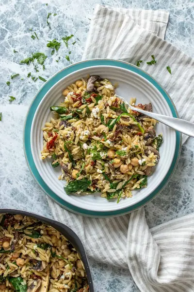

Vegan Orzo Salad

Ingredients
- 2 cups fresh spinach (, sliced)
- 2 cups sliced mushrooms (, about 12-13 mushrooms (I use crimini)
- ¼ cup chopped or sliced sun dried tomatoes (, I use the dried ones in a bag)
- 16 oz package orzo (, gluten-free if needed)
- 1½ cups chickpeas (, about one 15 ounce can)
- 1 drizzle olive oil (, or broth if oil free)
- 1 cup fresh basil (, sliced)
- 2-3 teaspoons garlic powder
- 2-3 teaspoons dried thyme
- 2-3 teaspoons lemon pepper (, can sub black pepper but reduce to 1 teaspoon so it isn't as strong)
- ½ cup vegan feta (, or parmesan)
Steps
- Place spinach, basil, mushrooms and sun dried tomatoes in the bottom of a pasta strainer.
- Cook the orzo according to package directions.
- When ready to drain, pour the whole pot of orzo with the water over the veggies in the bottom of the pasta strainer. This will slightly cook them.
- Put the pot top over the strainer to steam the veggies. Allow to sit for 3-5 minutes.
- Rinse with hot water to remove starchiness from the pasta then drain well and place everything in a big bowl or back in the pot.
- Add the chickpeas, oil, basil, seasonings, and feta into the bowl/pot and mix until well combined.
- Serve!
Recipe by Anjali Shah, from The Picky Eater. Saved here for personal use; the original has the full notes, tips and photos. Open original